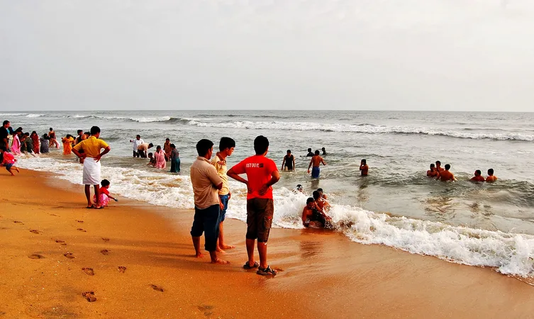

Ernakulam is a sprawling metropolis that beautifully combines its natural wonders with providing a base for a majority of the State’s business enterprises. Flanked by the Arabian sea, it is easily among the most visited locations in Kerala. It is an extremely important commercial centre but also has a plethora of destinations for tourists to enjoy. The city of Kochi, with its fine natural harbour, is the undisputed crown jewel of the district. From historic locations that transport you to a time when it acted as the commercial hub of the legendary Spice Route to exotic trips on boats where one can simply relax and soak in the weather, Kochi never disappoints. Ernakulam has always epitomized the Malayali spirit of welcoming all who visit it and this tradition continues to this day.
This charming beach is neatly nestled in the suburbs of Cherai, which is one of the most visited beaches due to its serenity and clean environ. The low tides and slow waves make it a highly recommended beach for swimming and other forms of water sports. It has an alluring walkway along the beach dotted with greens and sufficient places for seating.
This Portuguese palace, also known as the Dutch Palace is one of the prime places to visit in Kochi due to its historic relevance. This quadrangular palace built in typical Kerala Nalukettu style has a courtyard in the centre where is seated the Pazhayannur Bhagavati' the goddess of Kochi royal family.
The flooring of the palace is a sight to behold, as because it looks like polished black marble, but has been made the traditional Kerala way using burnt coconut shells, lime, charcoal, egg white etc giving a lasting finish. The reputation of the Palace is in the various murals painted in warm and rich colours the tempura style.
Marine drive is a quaint destination amongst the many Cochin tourist places the Kerala takes pride in. Exclusively built facing the backwaters, it offers a charming and a picturesque image especially during the evening hours attracting the locals and tourists alike. Along with the Rainbow bridge, which is a major draw for tourists, the Marine drive is lined with Shopping malls, fast food joints and other important landmark buildings of Kochi. Be ready to be allured by the gentle breeze while enjoying a walk down the promenade enjoying the company of your loved ones.